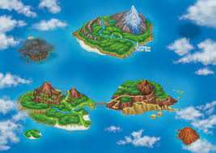
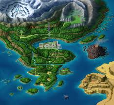
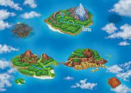
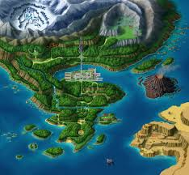

Mecánicas de Juego
La mecánica más característica de Pokémon Ranger es el uso del Capturador, con el que se deben dibujar círculos alrededor de los Pokémon usando el stylus. Cada Pokémon tiene patrones de movimiento y ataques que hacen cada captura diferente.


 


